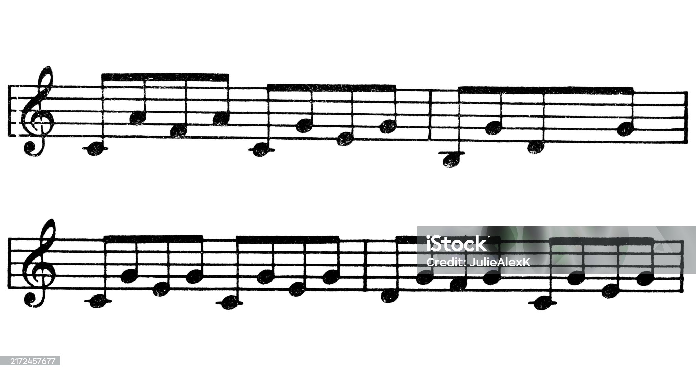

1. Cuerdas al Aire
Objetivo: Lograr un sonido limpio en las 4 cuerdas sin usar la mano izquierda.
Objetivo: Lograr un sonido limpio en las 4 cuerdas sin usar la mano izquierda.
Ejercicio de digitación cromática en los primeros 4 trastes para independencia de dedos.

Escalas de Sol (G) y Re (D) en dos octavas, usando posiciones cerradas.
Tocar las notas del acorde una por una con salto de cuerda.
Movimiento rápido y fluido de la púa para crear sustain en melodías.
Patrones complejos de salto de cuerda similares al banjo.